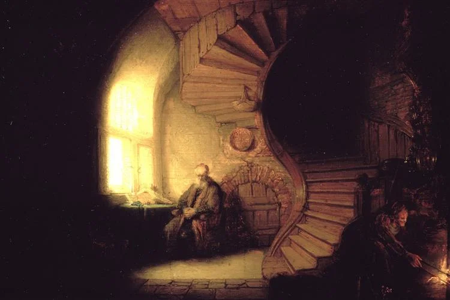

First published on Jan 30, 2022
My alarm rings at 6am. I snooze it and spend the next ten minutes scrolling through Twitter. I reach a tweet that I remember from late last night so switch to Instagram. I watch a few stories and scroll the algorithmically determined feed. I check three online news sources of varying political leanings and take in what has gone on in the world whilst I've slept. I check my personal and work emails. The alarm rings. I go back to Twitter - nothing new. I check the 'trending' section and scan through, uninterested. Instagram again - check to see if the 'explore' page has anything of interest.
Out of bed, make a cup of coffee whilst listening to a news related debate on the radio. Sit at my computer for work, check emails, open up Teams and read any messages whilst idly browsing Twitter and Instagram. Start working whilst listening to music.
At lunch I go for a walk listening to a podcast and then eat at my desk whilst catching up on a blog post, TV or Youtube videos. Back to work; the music only interrupted for the occasional Zoom call.
I listen to the radio whilst I cook and then eat dinner. I wind down with Netflix or TV. I fall asleep to a podcast or some gentle music.

That...that's not good.
The mind's natural state is one of stillness - or it should be. Yet like so many others, my mind is never at rest. There is always input. Thousands of people and ideas enter my mind via tweets, podcasts and news articles every single day.
Go back a few centuries and imagine the routine as described above for a 30 year old man. They wake up and speak to their family, they may read a newspaper on their commute, speak to a few people at work and then finish with conversation with the family in the evening. Each day the number of humans interacted with would be dramatically fewer and the quantity of information input would be even less. Go back even further, perhaps thousands of years, and you see that there was next to no regular input. Just a few family members and locals with whom you might trade or share news. Between these interactions what did the mind do? It had no podcasts, no social media and next to no current affairs other than what was going on in the next village.
Am I hiding from the world by never letting my mind settle and just be? Is it some sort of dopamine dependency whereby these new sources of information are so addictive that I am unable to operate without them? I don't know; I am fairly sure that it is not healthy.
When we talk of physical health it is common to refer to what is 'natural'. A Paleo diet tries to imitate what its followers believe is what we should eat based on the diet of our ancestors. Intermittent fasters believe that the natural state is sustained periods without food and then a large feast in line with the natural way of hunting and foraging and at its root, organic food strives to simply be natural.
And yet we pay far less attention to what would be seen as historically 'natural' when dealing with our mental input. Our information diet is given far less thought. If it is not natural to eat processed foods, is it natural to consume media that in just a few minutes can bombard your senses with the opinions of more people than you would have previously met in a year? Is it natural to know of every injustice, crisis and disaster around the world in real time? Is it natural to walk in nature and hear the voices of strangers talking without them being present?
I certainly don't profess to know the answer - these are merely observations about my own information diet and the assumption that many others will be similar.
What would a well thought out information diet look like and how best can be make the information we consume serve us?